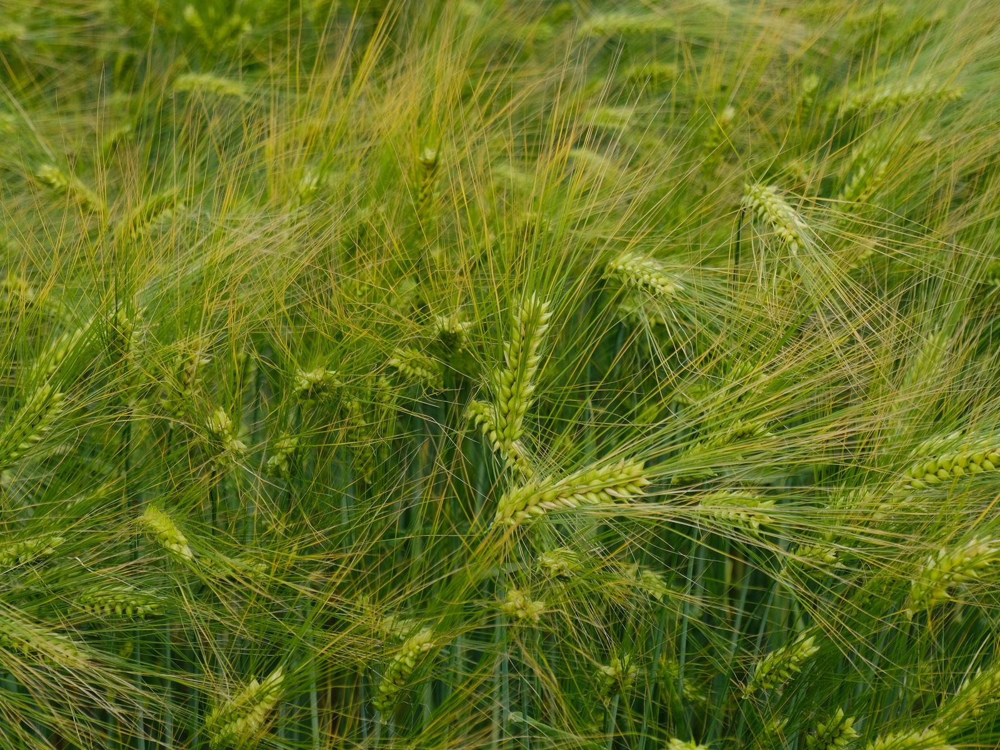

Ячмень — одна из древнейших зерновых культур, используемых человеком. Он применяется в пищевой промышленности, а также в производстве кормов и солода для пивоварения. Зерно ячменя содержит белки, углеводы, витамины и минералы.
Благодаря своей устойчивости к холодам ячмень широко выращивается в разных климатических зонах.
Посев ячменя проводят ранней весной или под зиму (озимые сорта).
Урожай собирают в летний период, обычно в июле–августе.
Ячмень богат клетчаткой и витаминами группы B, используется в пищевой и кормовой промышленности.
Выращивается в Европе, России, Канаде и странах с умеренным климатом.
Хорошо растёт в прохладном климате и устойчив к заморозкам.